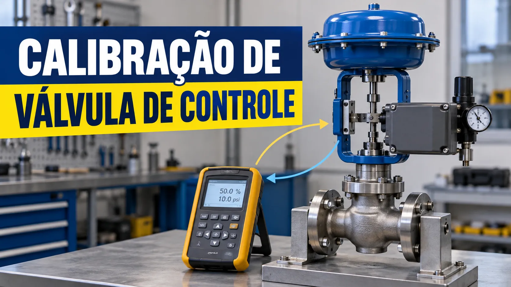

Calibração de válvula de controle 4-20 mA: o que conferir em campo
Conteúdo técnico: ALOGY Engenharia · Atualizado em: 11/09/2026

A válvula de controle é o elemento final que transforma a decisão do controlador em ação no processo. Por isso, não basta conferir apenas se existe sinal 4-20 mA. É preciso verificar se a válvula realmente se move para a posição esperada, no sentido correto e dentro da tolerância definida.
Uma calibração simples costuma testar os pontos 0%, 25%, 50%, 75% e 100%. Em uma malha linear, esses pontos equivalem a 4, 8, 12, 16 e 20 mA. O técnico aplica o sinal, observa a posição real da haste ou feedback e registra o desvio.
As-found e as-left
Registre a condição as-found antes de qualquer ajuste do positioner, zero ou span. Se houver intervenção prevista, execute o procedimento e repita o teste para documentar a condição as-left. Isso preserva o histórico real de desempenho da válvula.
O que verificar antes do teste
Antes de atuar na válvula, confirme liberação operacional, posição segura, alimentação pneumática, bloqueios, bypass, intertravamentos e orientação da operação.
- TAG da válvula e da malha.
- Faixa de sinal, normalmente 4-20 mA.
- Ação direta ou reversa.
- Fail open, fail close ou outra condição definida no projeto.
- Pressão e qualidade do ar de instrumentos.
- Escala do feedback de posição, quando existir.
- Configuração do positioner e limites de stroke.
Subida, descida e histerese
Testar somente na subida pode esconder problemas. Aplique os pontos em subida e depois em descida. Diferenças na mesma posição de comando podem indicar histerese, atrito, folga mecânica, stiction, agarramento ou comportamento do positioner.
Sinal 3-15 psi e posicionador
Em sistemas com conversor I/P ou posicionador pneumático, o sinal elétrico pode ser convertido para 3-15 psi. Mesmo assim, o que importa para o processo é a cadeia completa: 4-20 mA → I/P/positioner → atuador → haste → posição real.
Tolerância de aceitação
A tolerância não deve ser escolhida aleatoriamente. Ela depende do processo, criticidade, especificação do projeto, documentação técnica e procedimento interno. Um desvio pequeno em uma malha pouco sensível pode ter efeito diferente do mesmo desvio em uma malha crítica.
Ferramentas relacionadas
Aviso técnico
Este artigo e as ferramentas relacionadas são recursos informativos. Não substituem análise de risco, liberação operacional, bloqueio, procedimento de calibração, manual do fabricante, teste de segurança ou validação por profissional habilitado. Não movimente uma válvula conectada ao processo sem autorização e condição segura definida pela operação.